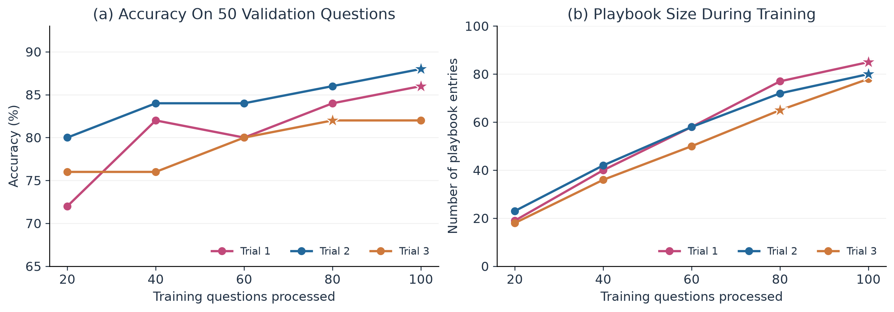
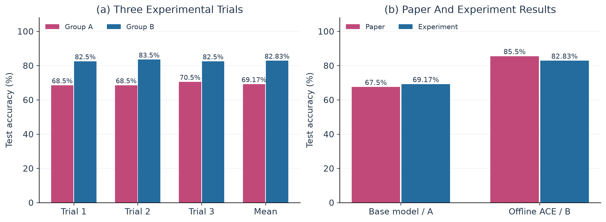
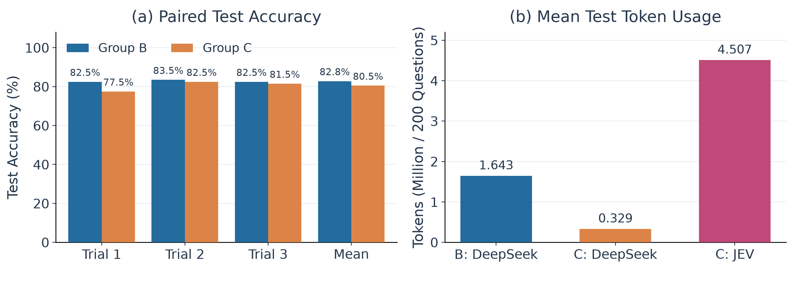
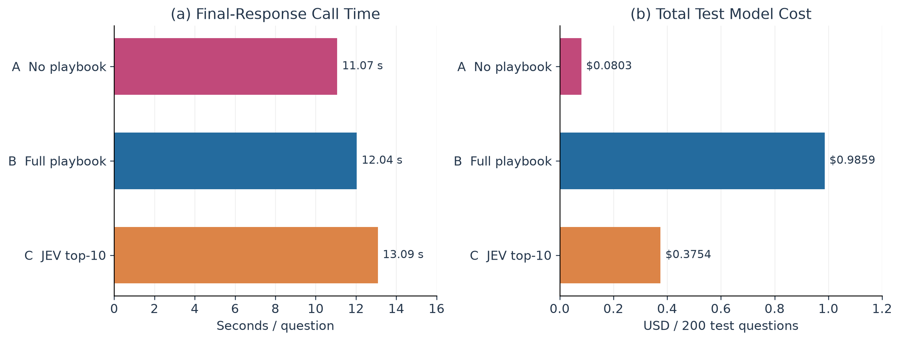

FTEC5660 · Reproducibility Study
Reproducing and
Improving ACE
Formula Financial Reasoning
with JEV Context Selection
Yiwei WanStudent Number: 1155261963
Three Ways to Answer
AEmpty Playbook
BLearned Playbook
CJEV Top-10
01 · Method
How ACE Learns
Improve the context. Keep the model weights fixed.
Generator
Answer with the
current playbook
→
Reflector
Use training feedback
to extract lessons
→
Curator
Add reusable entries
to the playbook
↶Updated Playbook → Next Question
One ModelThree Role PromptsUp to 3 Reflection / Retry Rounds
02 · Setup
Model and Data
DeepSeek-V3.1-Terminus
temperature = 0
Thinking disabled
Maximum output: 4,096 tokens
Controlled Comparison
50 formula categories
Same samples and question order
3 trials per group
Original formulas and explanations are removed from the model input.
02 · Setup
Three Experimental Groups
A
Empty Playbook
Answer test questions directly.
No learningB
Full Playbook
Learn from an empty playbook.
100 training questions · 1 epochC
JEV Top-10
Reuse the matching B playbook.
No new trainingTrain B→Validate Every 20 Steps→Select Best Playbook→Test B / C
C/01 ← B/01 · C/02 ← B/02 · C/03 ← B/03
03 · Validation
Validation Selects the Playbook
More experience does not guarantee higher accuracy.

B/01: Step 100B/02: Step 100B/03: Step 80
04 · Reproduction
Reproducing the Accuracy Gain
+13.67 ppA: 69.17% → B: 82.83%

Same improvement trend; different model version and smaller training / validation sets.
05 · Modification
JEV Score Top-10
Question
+ B Playbook
→
→
→
Generator
Answers
1General or
topical reminder
2Useful for a
supporting step
3Core formula or
key calculation
Rank by score · Break ties by original order · No ground-truth answer · No retraining
06 · Modification Results
Accuracy and Context After Filtering
−2.33 ppTest Accuracy: B → C
−79.96%DeepSeek Token Usage

C accuracy: 80.50% · Extra JEV usage: 4.507M tokens per test
06 · Modification Results
Time and Test Cost
61.92%Lower Total Test Cost: C vs B
+1.05 sMean API Time / Question: C vs B

C: $0.1975 DeepSeek + $0.1779 JEV = $0.3754 / 200 test questions
Testing costs only. Playbook learning costs are excluded.
07 · Discussion
Limitations and Next Steps
Current LimitationNext Step
Different Model and SettingsTerminus, prompts, and training rounds
→Align the Original SetupCheck whether the trend remains
Smaller Learning Sets100 training / 50 validation questions
→Expand the DataTest stability at a larger scale
Only Fixed Top-10No random or keyword baseline
→Compare Selection MethodsChoose k on the validation set
The accuracy loss may reflect selection size, ranking quality, or missing key rules.
08 · Conclusions
Learn Experience. Retrieve Selectively.
01Playbooks Improve Accuracy
Full ACE: 69.17% → 82.83%
02Selection Reduces Test Cost
JEV top-10: $0.9859 → $0.3754
03Choose the Trade-Off
80.50% accuracy with a smaller DeepSeek context